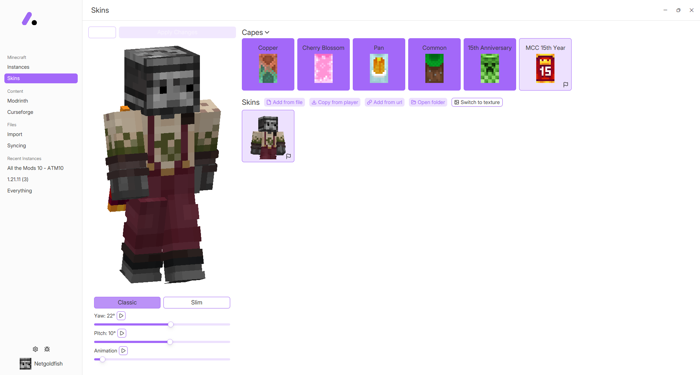
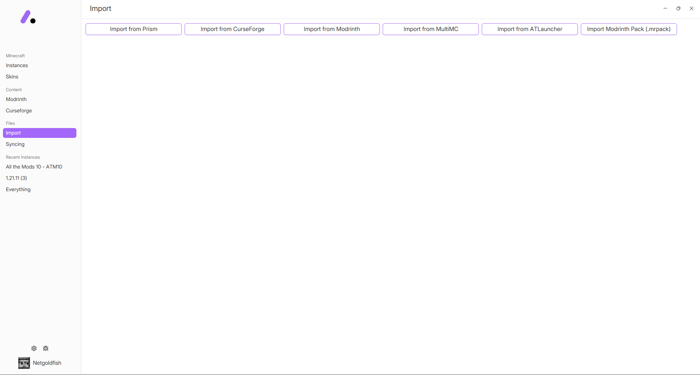

Built for Power Users
Modrinth & CurseForge Browsing
Access the world's largest mod repositories directly. Browse, search, and install mods, modpacks, and shaders without ever leaving the launcher.

Advanced Skin Customizer
Express yourself with a full-featured skin and cape manager. Preview your character in 3D and switch styles instantly with support for both Classic and Slim models.

Import from Multiple Launchers
Switching is easy. Effortlessly import your existing instances and data from Prism, CurseForge, Modrinth, MultiMC, and ATLauncher.
